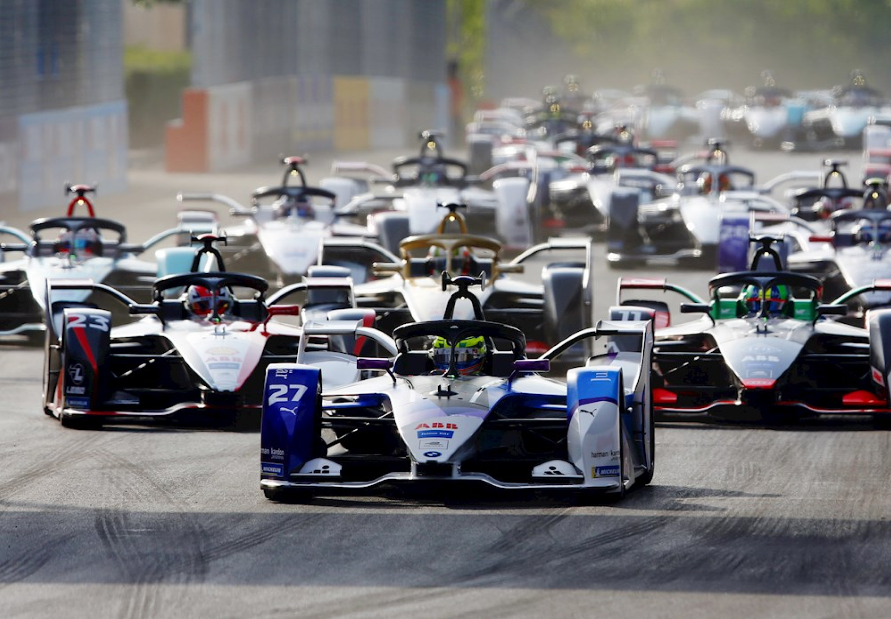

O DESAFIO
A FIAP juntamente com a empresa Tech Mahindra, elaborou como
Challenge de 2024 para as turmas de primeiro ano de Engenharia de Software
o desafio de Popularizar a Fórmula E, a fim de trazer maior visibilidade ao
público através de uma solução tecnológica a ser desenvolvida pelos alunos até o fim do ano.

O PROBLEMA
Percepção de que os carros elétricos são menos emocionantes e potentes em comparação com os carros de
corrida tradicionais movidos a combustível. Maior popularidade e tradição da Fórmula 1 e de outras
categorias de corrida mais estabelecidas, o que torna a Fórmula E menos atrativa para alguns espectadores.
Falta de conhecimento sobre a categoria e suas corridas, devido à sua relativa novidade em comparação com
outras competições automobilísticas.
A SOLUÇÃO
Um site interativo dedicado aos entusiastas da Fórmula E, projetado para oferecer uma experiência
envolvente e informativa. Este site proporciona aos usuários acesso a detalhes dos pilotos e a transmissão ao
vivo das corridas, aumentando assim o seu envolvimento com o esporte. Uma característica distintiva e
excitante deste portal é a funcionalidade que permite aos usuários acumular pontos, os quais podem ser
utilizados colaborativamente com a comunidade para conceder "poderes" aos pilotos, assemelhando-se aos
itens do jogo Mario Kart. Esta função inovadora eleva o nível de interação e participação dos fãs, oferecendo-lhes
uma oportunidade sem precedentes de influenciar o desenrolar das corridas. Para obter pontos, os
usuários são incentivados a convidar amigos para o site e a manter uma presença regular através de horas de
visualização.
IMPACTOS

Temos uma ideia inovadora e uma tecnologia
revolucionária que estamos confiantes de
que atrairá um público ainda maior para a
Formula E. Estamos trabalhando em uma
tecnologia que permitirá aos
espectadores experimentarem as corridas como nunca antes. Com essa tecnologia, os fãs poderão
mergulhar diretamente na ação, estamos
desenvolvendo uma plataforma interativa
que permitirá aos espectadores participarem
ativamente das corridas, votando em
decisões estratégicas em tempo real.
Estamos confiantes de que essa combinação
de imersão, interatividade e tecnologia de
ponta tornará a Formula E uma experiência
obrigatória para os fãs de corridas e
entusiastas de tecnologia em todo o mundo.